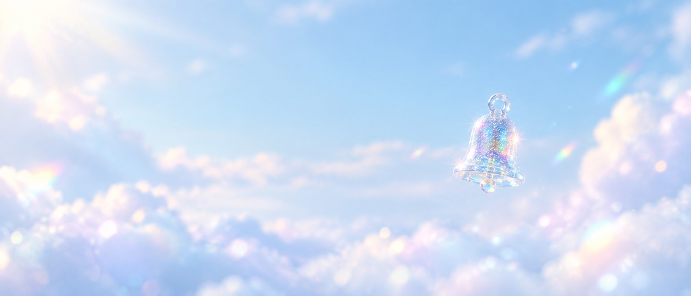
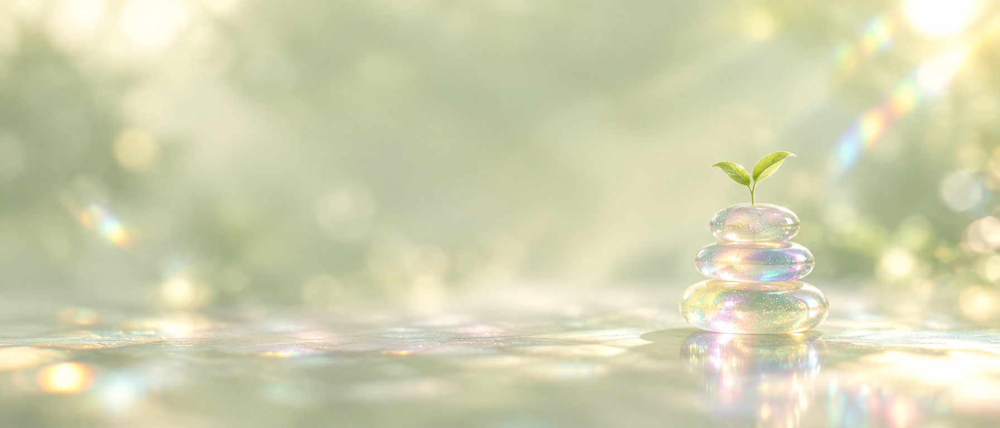
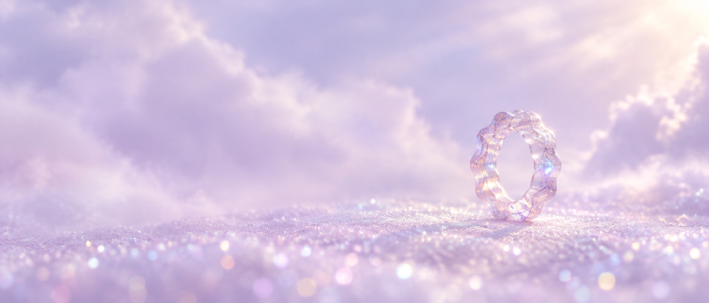
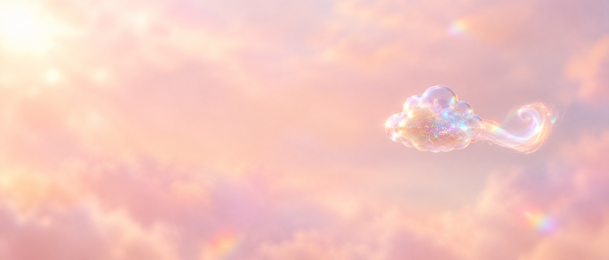
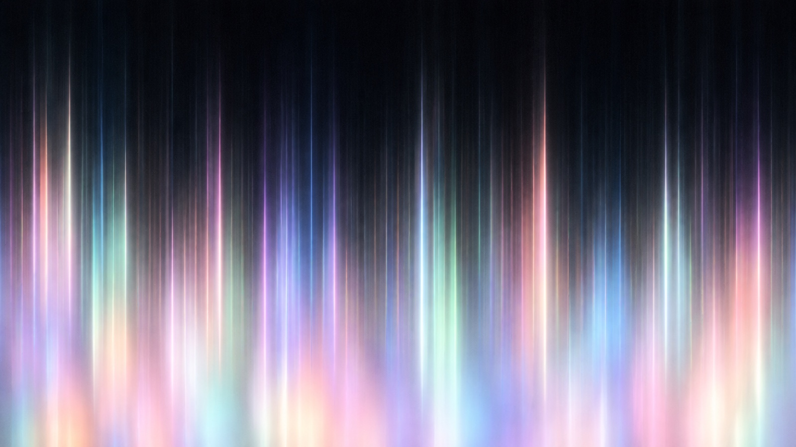
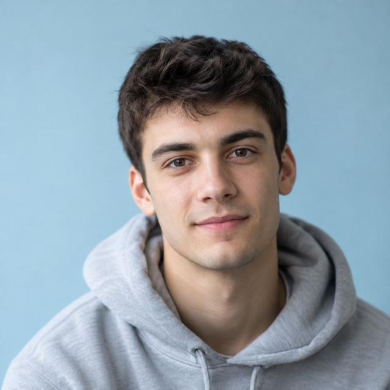
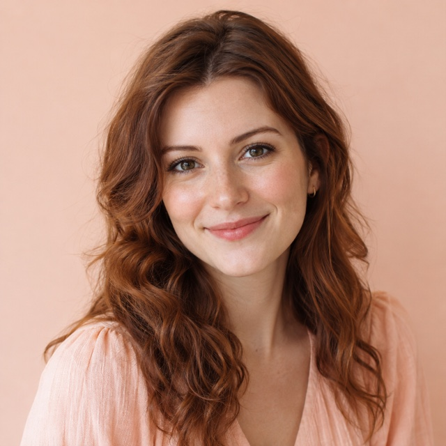

[01]
Напоминания
Скажет выпить воды и встать, один раз
7 мин
на настройку
Напоминает про воду, паузы и конец рабочего дня
Попробовать5
сцен дня
4
возможности
1
робот вместо уведомлений
Pace — это робот на столе и приложение. Он подсказывает, когда выпить воды, размяться и закончить работу. Без оценок и счётчиков пропусков

Скажет выпить воды и встать, один раз

По одной маленькой привычке. Пропуск не страшен

Тихо светится, пока идёт рабочий блок

Через два часа предложит три минуты отдыха
Три шага к спокойному ритму
Шаг 1
Расскажите о своём дне
Когда вы встаёте, работаете, отдыхаете. Это займёт пару минут.
Шаг 2
Выберите, о чём напоминать
Вода, паузы, фокус, вечер. Только то, что нужно вам.
Шаг 3
Живите в своём ритме
Помощник подсказывает и радуется, а вы делаете по-своему.
Отметьте, что уже сделали сегодня. День на круге заполнится цветом, а помощник подскажет, что дальше.
Сегодня
0 из 5
Начнём с одного дела. Любого.



Аня
дизайнер, работает из дома
★★★★★
«Раньше я забывала про обед до трёх часов. Теперь Pace тихо напоминает про паузу. День стал ровнее.»
Миша
студент
★★★★★
«Фокус-таймер работает лучше приложений: телефон лежит в стороне, а робот светится, пока я учусь.»
Катя
фрилансер
★★★★★
«Утренний ритуал с водой и планом занимает пять минут, и робот радуется.»
Олег
разработчик
★★★★★
«Раз в два часа он предлагает размяться. Не давит, поэтому я его слушаю.»
Ира
преподаватель
★★★★★
«Вечером робот напоминает отложить телефон. Я стала раньше ложиться.»
Подключите помощника сегодня: он подстроится под ваш день, напомнит о важном и поддержит, когда нужна пауза.
Проверьте почту: там доступ и первый шаг. Если письма нет, загляните в «Спам».